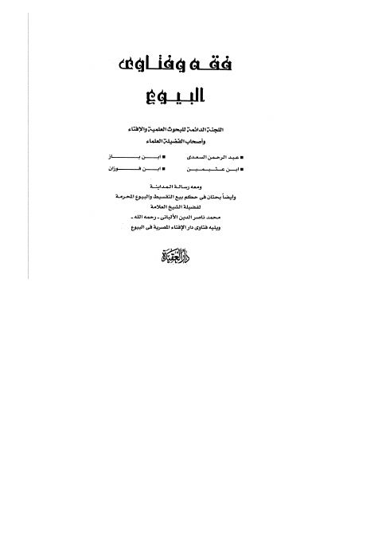

Downloads need an internet connection.
فقه وفتاوى البيوع
Authors: عبد العزيز بن عبد الله بن باز محمد بن صالح العثيمين صالح بن فوزان الفوزان عبد الرحمن بن ناصر السعدي
Editors: أشرف بن عبد المقصود
Publishers: دار العقيدة للتراث
▫️ العنوان: فقه وفتاوى البيوع ▪️ المحقق: #عبد_الرحمن_السعدي • #ابن_باز • #ابن_عثيمين • #الفوزان ▫️ الناشر: #أشرف_بن_عبد_المقصود ▪️ تاريخ النشر: دار العقيدة ▫️ بلد النشر: مصر، #1424ه_2003م ▪️ الطبعة: القاهرة، الإسكندرية ▫️ عدد الأجزاء: 1 ▪️ الصفحات: 1 ▫️ نوع الوعاء: #248 ▪️ التصنيف الفرعي: #الفقه_وأصوله ۪